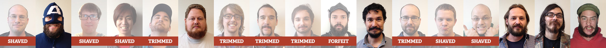
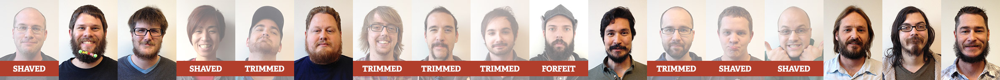
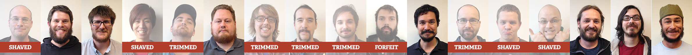
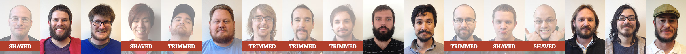
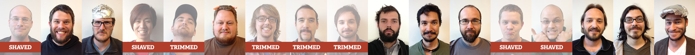
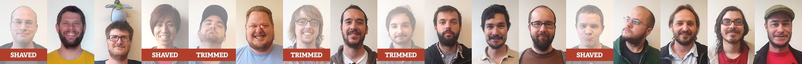
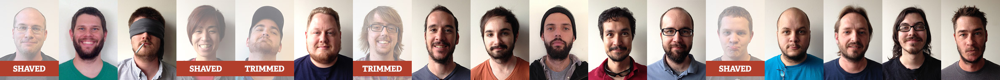
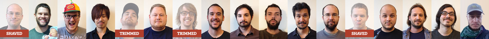

Week Twelve: The Yukon Cornelius

Week Eleven: The Castaways

Week Ten: The Magnificent Seven

Week Nine: The Resolute

Week Seven: The End of the World

Week Six: The Dirty Hipster

Week Five: The Homeless Look

Week Four: The Itchy & Scratchy
Week One: The 5 O'Clock Shadow
Week Zero: The Clean Shave